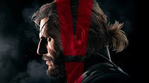
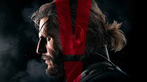

Bienvenido al blog de Metal Gear Solid V
Aquí encontrarás información sobre este increíble juego de acción y sigilo. ¡Disfruta explorando el mundo de Metal Gear!
Aquí encontrarás información sobre este increíble juego de acción y sigilo. ¡Disfruta explorando el mundo de Metal Gear!
Metal Gear Solid V: The Phantom Pain es el último título de la serie Metal Gear, desarrollado por Kojima Productions y publicado por Konami. Este juego es una aventura emocionante que te llevará a través de múltiples misiones y desafíos.
En Metal Gear Solid V encontrarás varios easter eggs del juego. ¡Asegúrate de explorar y encontrar todos los detalles ocultos!